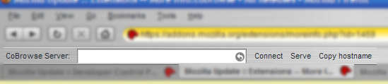

CoBrowse FAQ
cobrowse
copyright (c) 2005 mark l. chang
Q: How does this thing work?
A: Basically, one person drives (serves) and one any number of people ride along (clients). The server hosts a session and clients connect to the server. When the server navigates to a new site (by clicking on a link, entering a new URL in the navigation bar, or switching tabs), all the clients go to that site as well. There you have it, collaborative browsing (the really simply kind).
Q: Ok, how do I do get this thing going?
A: First, someone has to be the server. That person simpl clicks on the Serve button in the toolbar. Now, any number of clients can connect to this server by putting either the IP address or the host name of the server machine into the pull-down / text entry box and clicking the Connect button. It's that easy.
Q: What do the other buttons do?
A: Copy hostname simply copies your computer's host name into your clipboard. The intention is to make it easy to send your friends your hostname when you are serving a CoBrowse session. Just start your server, click Copy hostname, and paste that into an email or instant message to your friends. The other buttons simply stop the client and server. Note that the Serve button turns into a Stop (0) button, where the number in parentheses indicates the current number connected clients.
Q: Whoa, it remembers servers!
A: Yes. When you connect to a server as a client, it keeps that in the pull-down list so you can easily connect to that server again.
Q: Can I get a screen shot?
A: Sure, I can do that. Check out the non-fuzzified spot in the picture.

Q: Can you give us more technical details?
A: Yes. First, bust open the XPI and look at the source if you want the real details. In short, the server opens port 5000 on your computer and accepts TCP connections. Messages sent between server and client are simple ASCII messages that contain only the URL being navigated to, nothing else. And as of now, no access control checking goes on before a client is allowed to connect. That may be implemented later on. But for now, I wanted to keep things simple.